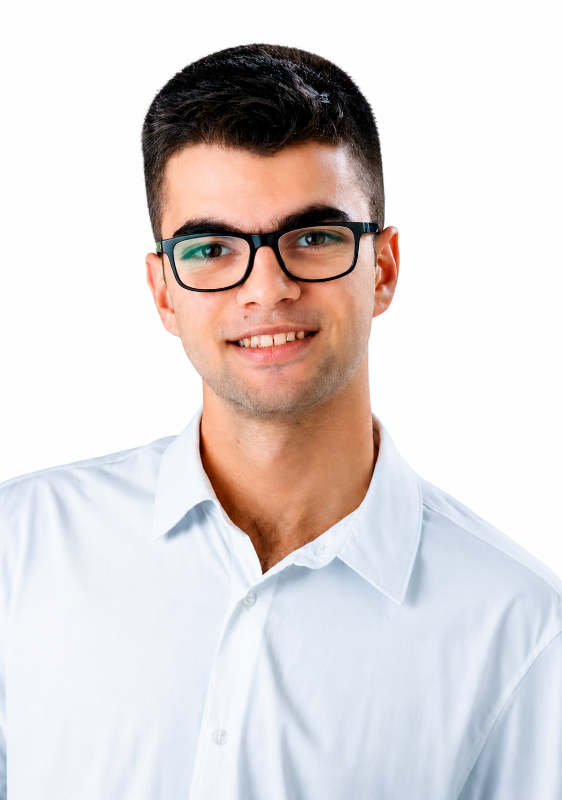

XimoCrespo
Estudiante de Desarrollo de Aplicaciones Web con base en sistemas, redes y soporte IT. Me gusta que las cosas funcionen de punta a punta.

Empecé por lo que hay debajo de las aplicaciones: redes, equipos y servidores. Ahora estudio cómo se construyen.
Soy técnico en Sistemas Microinformáticos y Redes (con Matrícula de Honor) y cursando DAW en el CIPFP Cheste. He trabajado instalando infraestructura de fibra en Teulada y dando soporte a más de 300 clientes en una empresa de Athlone, en Irlanda.
Busco unas prácticas donde aprender rápido, resolver problemas reales y tratar con clientes mientras crezco como desarrollador.
Experiencia
Avova Technologies Ltd.
Resolución de incidencias y soporte a más de 300 clientes siguiendo ISO 20000. Realizado durante mi Formación en Centros de Trabajo.
Villas Holidays Costa Blanca
Gestión de reservas de clientes internacionales y soporte técnico a la empresa.
Closeness
Instalación y configuración de infraestructura crítica: routers, switches, ONTs y CTOs. Realizado durante mi Formación en Centros de Trabajo.
Formación
- Desarrollo de Aplicaciones WebCIPFP Cheste · 2026 – actualidad
- Sistemas Microinformáticos y RedesIES Historiador Chabàs · 2024 – 2026
- Educación Secundaria ObligatoriaIES Josep Iborra · 2020 – 2024
Habilidades
- Microsoft Office 365
- Virtualización
- Gestión de tickets (ISO 20000)
- Uso corporativo de IA
- Trabajo en equipo
- Resolución de problemas
Idiomas
- Español, nativo
- Valenciano, nativo
- Inglés, B2